install.packages("dplyr")
library(dplyr)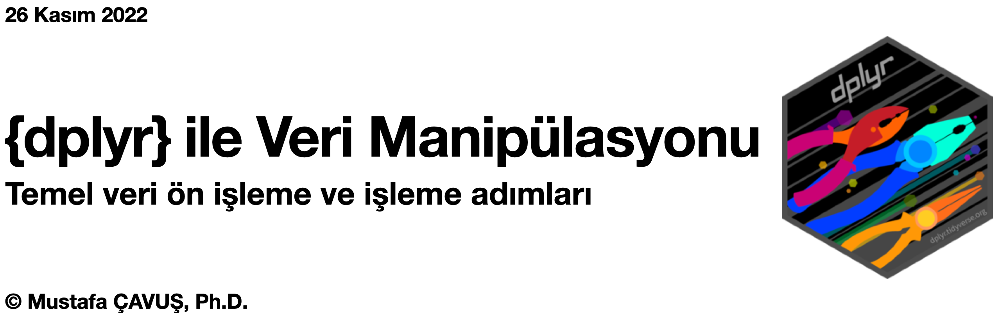
Giriş
Veri görselleştirme, analiz etme ve modelleme gibi temel uygulamaların en uzun ve zorlu süreci, yapılandırılmış ya da yapılandırılmamış veriyi hazır hale getirmek için gerekli (ön) işlemlerin gerçekleştirilmesinden oluşan veri (ön) işleme sürecidir.
Bu süreçte, farklı veri kaynaklarından elde edilen düzenli olmayan, yapılandırılmamış veri üzerinde yapılması gereken işlemler, veri ön işlemleri; düzenli, yapılandırılmış veriler üzerinde bir sonraki adıma hazır hali getirmek üzere yapılan işlemler ise veri işlemleri olarak adlandırılır.
Tüm bu işlemler, temel (base) R’da yer alan fonksiyonlar yardımıyla gerçekleştirilebilir. Ancak bu fonksiyonların daha kullanışlı versiyonları, R kullanıcılarının alet seti olarak da betimlenen, {dplyr} paketinde sunulmaktadır. Bu eğitimde, öncelikle düzenli (tidy) veri yapısı tanıtılacak ve sonrasında ise veri (ön) işleme adımlarında kullanılan {dplyr} ve {tidyr} fonksiyonlarının temel işlevleri ve uygulamaları ele alınacaktır.
1. Düzenli (Tidy) Veri Yapısı
Tidy veri seti yapısında, her bir sütuna bir değişkeni, her bir satıra ise bir gözlem şeklinde yerleştirilmiştir.
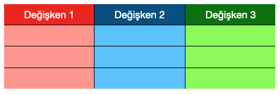
Yukarıdaki tidy veri yapısında her bir hücre, bir gözlem birimini temsil eder. Bu tür yapıdaki oluşturulan ve/veya kullanılan bir veri seti üzerinde bir çok karmaşık sorgu işlemini yapabilmek için R’da kullanışlı paketler ve fonksiyonlar bulunmaktadır.
2. Veri Manipülasyonu
Veri manipülasyonu (işleme), veri setini analiz için hazırladığımız bir süreçtir. Veriyi ayıklama (filtreleme), özetleme, yeni değişkenler oluşturma gibi adımlar içerir.
3. {dplyr} paketi
{dplyr} paketi tidy veri yapısı üzerinde işlem yapabilmek için kullanışlı fonksiyonları içeren bir pakettir. R’da yer alan temel fonksiyonlara göre daha hızlı ve efektif şekilde çalışırlar. Veri görselleştirme başta olmak üzere, bir çok paket içeren {tidyverse} meta-paket ailesinin bir parçasıdır. Bu özellik, {dplyr} paketinin diğer paketler ile uyum içerisinde çalışabilmeyi sağlar.
| temel R | {dplyr} |
|---|---|
df[c("x", "y")] veya subset() |
select() |
df[which(x), , drop = FALSE] veya subset() |
filter() |
df[order(x), , drop = FALSE] |
arrange() |
mean(df$x), tapply(), aggregate(), by() |
summarise() |
df$z <- df$x + df$y veya transform() |
mutate() |
4. {dplyr} ve SQL
SQL veri analizi için kullanılan en eski dillerden biridir. Ancak SQL veri analizi yapmak için değil, verileri sorgulamak ve özetlemek için tasarlanmıştır. SQL, çok sayıda değişken üzerinde veri analiz sürecinde ihtiyaç duyulan tüm işlemleri yapmak için elverişli değildir. {dplyr}, {numpy} ve {pandas} gibi paketler bu konuda daha kullanışlıdırlar. Yine de, R, Python, SAS gibi modern veri analizi için kullanılan programlama dilleri ve yazılımları, SQL komutlarını destekler.
{dplyr} paketinin sağladığı fonksiyonların karşılık geldiği SQL fonksiyonları Tablo 1’de verilmiştir.
{dplyr} |
SQL |
|---|---|
select() |
SELECT |
filter() |
WHERE |
group_by() |
GROUP BY |
arrange() |
ORDER BY |
join() |
JOIN |
mutate() |
COLUMN ALIAS |
5. Temel {dplyr} fonksiyonları
summarise(), filter(), select(), ve mutate() başta olmak üzere bir çok fonksiyon sunmaktadır. Bu bölümde en sık kullanılan bu dört fonksiyonu ele alacağız.
Öncelikle {dplyr} paketini yükleyip, çağıralım:
5.1. select() fonksiyonu
Veri setinde istenilen sütunları (değişkenleri) seçmek için kullanılır.
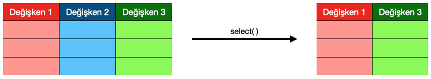
Kaggle’da yer alan 1993 yılından günümüze kadar oynanan tüm uluslararası futbol maçlarına ilişkin değişkenleri içeren veri setini kullanalım. Verisetini bağlantı üzerinden indirebilirsiniz: https://www.kaggle.com/datasets/brenda89/fifa-world-cup-2022
library(readr)
worldcup <- read_csv("international_matches.csv")str(worldcup)spc_tbl_ [23,921 × 25] (S3: spec_tbl_df/tbl_df/tbl/data.frame)
$ date : Date[1:23921], format: "1993-08-08" "1993-08-08" ...
$ home_team : chr [1:23921] "Bolivia" "Brazil" "Ecuador" "Guinea" ...
$ away_team : chr [1:23921] "Uruguay" "Mexico" "Venezuela" "Sierra Leone" ...
$ home_team_continent : chr [1:23921] "South America" "South America" "South America" "Africa" ...
$ away_team_continent : chr [1:23921] "South America" "North America" "South America" "Africa" ...
$ home_team_fifa_rank : num [1:23921] 59 8 35 65 67 70 50 65 111 4 ...
$ away_team_fifa_rank : num [1:23921] 22 14 94 86 5 19 102 86 9 3 ...
$ home_team_total_fifa_points : num [1:23921] 0 0 0 0 0 0 0 0 0 0 ...
$ away_team_total_fifa_points : num [1:23921] 0 0 0 0 0 0 0 0 0 0 ...
$ home_team_score : num [1:23921] 3 1 5 1 1 0 2 4 0 1 ...
$ away_team_score : num [1:23921] 1 1 0 0 3 1 0 0 7 2 ...
$ tournament : chr [1:23921] "FIFA World Cup qualification" "Friendly" "FIFA World Cup qualification" "Friendly" ...
$ city : chr [1:23921] "La Paz" "Maceió" "Quito" "Conakry" ...
$ country : chr [1:23921] "Bolivia" "Brazil" "Ecuador" "Guinea" ...
$ neutral_location : logi [1:23921] FALSE FALSE FALSE FALSE FALSE FALSE ...
$ shoot_out : chr [1:23921] "No" "No" "No" "No" ...
$ home_team_result : chr [1:23921] "Win" "Draw" "Win" "Win" ...
$ home_team_goalkeeper_score : num [1:23921] NA NA NA NA NA NA NA NA NA NA ...
$ away_team_goalkeeper_score : num [1:23921] NA NA NA NA NA NA NA NA NA NA ...
$ home_team_mean_defense_score : num [1:23921] NA NA NA NA NA NA NA NA NA NA ...
$ home_team_mean_offense_score : num [1:23921] NA NA NA NA NA NA NA NA NA NA ...
$ home_team_mean_midfield_score: num [1:23921] NA NA NA NA NA NA NA NA NA NA ...
$ away_team_mean_defense_score : num [1:23921] NA NA NA NA NA NA NA NA NA NA ...
$ away_team_mean_offense_score : num [1:23921] NA NA NA NA NA NA NA NA NA NA ...
$ away_team_mean_midfield_score: num [1:23921] NA NA NA NA NA NA NA NA NA NA ...
- attr(*, "spec")=
.. cols(
.. date = col_date(format = ""),
.. home_team = col_character(),
.. away_team = col_character(),
.. home_team_continent = col_character(),
.. away_team_continent = col_character(),
.. home_team_fifa_rank = col_double(),
.. away_team_fifa_rank = col_double(),
.. home_team_total_fifa_points = col_double(),
.. away_team_total_fifa_points = col_double(),
.. home_team_score = col_double(),
.. away_team_score = col_double(),
.. tournament = col_character(),
.. city = col_character(),
.. country = col_character(),
.. neutral_location = col_logical(),
.. shoot_out = col_character(),
.. home_team_result = col_character(),
.. home_team_goalkeeper_score = col_double(),
.. away_team_goalkeeper_score = col_double(),
.. home_team_mean_defense_score = col_double(),
.. home_team_mean_offense_score = col_double(),
.. home_team_mean_midfield_score = col_double(),
.. away_team_mean_defense_score = col_double(),
.. away_team_mean_offense_score = col_double(),
.. away_team_mean_midfield_score = col_double()
.. )
- attr(*, "problems")=<externalptr> Bu veriseti, 1993 yılından bugüne kadar oynanan tüm uluslararası futbol maçlarına ilişkin bilgilerin yanı sıra, her takımın gücü, gerçek FIFA sıralamalarını, EA Sport FIFA video oyununa dayalı oyuncu güçlerine ilişkin verileri içermektedir.
Veriseti üzerinde select() fonksiyonu ile bir kaç özetleme uygulaması yapalım.
select(worldcup, tournament)# A tibble: 23,921 × 1
tournament
<chr>
1 FIFA World Cup qualification
2 Friendly
3 FIFA World Cup qualification
4 Friendly
5 FIFA World Cup qualification
6 FIFA World Cup qualification
7 Friendly
8 Friendly
9 Friendly
10 Friendly
# … with 23,911 more rowsBir veya bir kaç değişken dışında geri kalan tüm değişkenleri seçmek için aşağıdaki kod kullanılır.
# city değişkeni (sütunu) hariç diğer değişkenlerin seçimi
select(worldcup, -city)# A tibble: 23,921 × 24
date home_team away_…¹ home_…² away_…³ home_…⁴ away_…⁵ home_…⁶ away_…⁷
<date> <chr> <chr> <chr> <chr> <dbl> <dbl> <dbl> <dbl>
1 1993-08-08 Bolivia Uruguay South … South … 59 22 0 0
2 1993-08-08 Brazil Mexico South … North … 8 14 0 0
3 1993-08-08 Ecuador Venezu… South … South … 35 94 0 0
4 1993-08-08 Guinea Sierra… Africa Africa 65 86 0 0
5 1993-08-08 Paraguay Argent… South … South … 67 5 0 0
6 1993-08-08 Peru Colomb… South … South … 70 19 0 0
7 1993-08-08 Zimbabwe Eswati… Africa Africa 50 102 0 0
8 1993-08-09 Guinea Sierra… Africa Africa 65 86 0 0
9 1993-08-11 Faroe Isl… Norway Europe Europe 111 9 0 0
10 1993-08-11 Sweden Switze… Europe Europe 4 3 0 0
# … with 23,911 more rows, 15 more variables: home_team_score <dbl>,
# away_team_score <dbl>, tournament <chr>, country <chr>,
# neutral_location <lgl>, shoot_out <chr>, home_team_result <chr>,
# home_team_goalkeeper_score <dbl>, away_team_goalkeeper_score <dbl>,
# home_team_mean_defense_score <dbl>, home_team_mean_offense_score <dbl>,
# home_team_mean_midfield_score <dbl>, away_team_mean_defense_score <dbl>,
# away_team_mean_offense_score <dbl>, away_team_mean_midfield_score <dbl>, …# city ve date değişkeni (sütunu) hariç diğer değişkenlerin seçimi
select(worldcup, -c(date, city))# A tibble: 23,921 × 23
home_team away_…¹ home_…² away_…³ home_…⁴ away_…⁵ home_…⁶ away_…⁷ home_…⁸
<chr> <chr> <chr> <chr> <dbl> <dbl> <dbl> <dbl> <dbl>
1 Bolivia Uruguay South … South … 59 22 0 0 3
2 Brazil Mexico South … North … 8 14 0 0 1
3 Ecuador Venezu… South … South … 35 94 0 0 5
4 Guinea Sierra… Africa Africa 65 86 0 0 1
5 Paraguay Argent… South … South … 67 5 0 0 1
6 Peru Colomb… South … South … 70 19 0 0 0
7 Zimbabwe Eswati… Africa Africa 50 102 0 0 2
8 Guinea Sierra… Africa Africa 65 86 0 0 4
9 Faroe Islands Norway Europe Europe 111 9 0 0 0
10 Sweden Switze… Europe Europe 4 3 0 0 1
# … with 23,911 more rows, 14 more variables: away_team_score <dbl>,
# tournament <chr>, country <chr>, neutral_location <lgl>, shoot_out <chr>,
# home_team_result <chr>, home_team_goalkeeper_score <dbl>,
# away_team_goalkeeper_score <dbl>, home_team_mean_defense_score <dbl>,
# home_team_mean_offense_score <dbl>, home_team_mean_midfield_score <dbl>,
# away_team_mean_defense_score <dbl>, away_team_mean_offense_score <dbl>,
# away_team_mean_midfield_score <dbl>, and abbreviated variable names …Bir metinsel ifade içeren tüm değişkenleri seçmek için contains() fonksiyonu kullanılabilir.
select(worldcup, contains("fifa"))# A tibble: 23,921 × 4
home_team_fifa_rank away_team_fifa_rank home_team_total_fifa_points away_te…¹
<dbl> <dbl> <dbl> <dbl>
1 59 22 0 0
2 8 14 0 0
3 35 94 0 0
4 65 86 0 0
5 67 5 0 0
6 70 19 0 0
7 50 102 0 0
8 65 86 0 0
9 111 9 0 0
10 4 3 0 0
# … with 23,911 more rows, and abbreviated variable name
# ¹away_team_total_fifa_pointsBir metinsel ifade ile başlayan tüm değişkenleri seçmek için starts_with() fonksiyonu, biten tüm değişkenleri seçmek için ise ends_with() fonksiyonu kullanılır.
select(worldcup, starts_with("home_team"))# A tibble: 23,921 × 10
home_team home_…¹ home_…² home_…³ home_…⁴ home_…⁵ home_…⁶ home_…⁷ home_…⁸
<chr> <chr> <dbl> <dbl> <dbl> <chr> <dbl> <dbl> <dbl>
1 Bolivia South … 59 0 3 Win NA NA NA
2 Brazil South … 8 0 1 Draw NA NA NA
3 Ecuador South … 35 0 5 Win NA NA NA
4 Guinea Africa 65 0 1 Win NA NA NA
5 Paraguay South … 67 0 1 Lose NA NA NA
6 Peru South … 70 0 0 Lose NA NA NA
7 Zimbabwe Africa 50 0 2 Win NA NA NA
8 Guinea Africa 65 0 4 Win NA NA NA
9 Faroe Islands Europe 111 0 0 Lose NA NA NA
10 Sweden Europe 4 0 1 Lose NA NA NA
# … with 23,911 more rows, 1 more variable:
# home_team_mean_midfield_score <dbl>, and abbreviated variable names
# ¹home_team_continent, ²home_team_fifa_rank, ³home_team_total_fifa_points,
# ⁴home_team_score, ⁵home_team_result, ⁶home_team_goalkeeper_score,
# ⁷home_team_mean_defense_score, ⁸home_team_mean_offense_scoreİlk üç sırada yer alan değişkenleri ya da belirli sıralarda yer alan değişkenleri seçmek için ise yol tercih edilebilir.
# İlk üç sıradaki değişkeni seçme işlemi
select(worldcup, 1:3)# A tibble: 23,921 × 3
date home_team away_team
<date> <chr> <chr>
1 1993-08-08 Bolivia Uruguay
2 1993-08-08 Brazil Mexico
3 1993-08-08 Ecuador Venezuela
4 1993-08-08 Guinea Sierra Leone
5 1993-08-08 Paraguay Argentina
6 1993-08-08 Peru Colombia
7 1993-08-08 Zimbabwe Eswatini
8 1993-08-09 Guinea Sierra Leone
9 1993-08-11 Faroe Islands Norway
10 1993-08-11 Sweden Switzerland
# … with 23,911 more rows# 2, 3, ve 7.sıralardaki değişkenleri seçme işlemi
select(worldcup, c(2, 3, 7))# A tibble: 23,921 × 3
home_team away_team away_team_fifa_rank
<chr> <chr> <dbl>
1 Bolivia Uruguay 22
2 Brazil Mexico 14
3 Ecuador Venezuela 94
4 Guinea Sierra Leone 86
5 Paraguay Argentina 5
6 Peru Colombia 19
7 Zimbabwe Eswatini 102
8 Guinea Sierra Leone 86
9 Faroe Islands Norway 9
10 Sweden Switzerland 3
# … with 23,911 more rows5.2. filter() fonksiyonu
Veri setinde istenilen ya da belirli koşulları sağlayan satırları (gözlem değerleri) seçmek, filtrelemek için kullanılır.
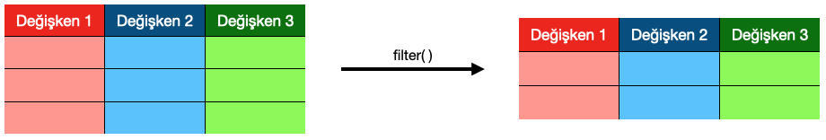
Veriseti üzerinde filter() fonksiyonu ile bir kaç özetleme uygulaması yapalım.
# Türkiye'nin ev sahibi olarak oynadığı maçları filtreleme işlemi
filter(worldcup, home_team == "Turkey")# A tibble: 156 × 25
date home_team away_t…¹ home_…² away_…³ home_…⁴ away_…⁵ home_…⁶ away_…⁷
<date> <chr> <chr> <chr> <chr> <dbl> <dbl> <dbl> <dbl>
1 1993-10-27 Turkey Poland Europe Europe 67 23 0 0
2 1993-11-10 Turkey Norway Europe Europe 67 2 0 0
3 1994-04-20 Turkey Russia Europe Europe 57 12 0 0
4 1994-10-12 Turkey Iceland Europe Europe 39 37 0 0
5 1994-12-14 Turkey Switzer… Europe Europe 48 7 0 0
6 1995-02-15 Turkey Romania Europe Europe 48 11 0 0
7 1995-03-08 Turkey Israel Europe Europe 49 40 0 0
8 1995-03-29 Turkey Sweden Europe Europe 49 4 0 0
9 1995-08-30 Turkey North M… Europe Europe 31 99 0 0
10 1995-09-06 Turkey Hungary Europe Europe 31 61 0 0
# … with 146 more rows, 16 more variables: home_team_score <dbl>,
# away_team_score <dbl>, tournament <chr>, city <chr>, country <chr>,
# neutral_location <lgl>, shoot_out <chr>, home_team_result <chr>,
# home_team_goalkeeper_score <dbl>, away_team_goalkeeper_score <dbl>,
# home_team_mean_defense_score <dbl>, home_team_mean_offense_score <dbl>,
# home_team_mean_midfield_score <dbl>, away_team_mean_defense_score <dbl>,
# away_team_mean_offense_score <dbl>, away_team_mean_midfield_score <dbl>, …# Ev sahibi takımın üçten fazla gol attığı maçları filtreleme işlemi
filter(worldcup, home_team_score > 3)# A tibble: 2,543 × 25
date home_team away_…¹ home_…² away_…³ home_…⁴ away_…⁵ home_…⁶ away_…⁷
<date> <chr> <chr> <chr> <chr> <dbl> <dbl> <dbl> <dbl>
1 1993-08-08 Ecuador Venezu… South … South … 35 94 0 0
2 1993-08-09 Guinea Sierra… Africa Africa 65 86 0 0
3 1993-08-22 Bolivia Venezu… South … South … 59 94 0 0
4 1993-08-25 Denmark Lithua… Europe Europe 10 84 0 0
5 1993-08-29 Brazil Bolivia South … South … 8 59 0 0
6 1993-08-29 Colombia Peru South … South … 19 70 0 0
7 1993-08-29 Uruguay Venezu… South … South … 22 94 0 0
8 1993-09-05 Brazil Venezu… South … South … 8 94 0 0
9 1993-09-17 Saudi Ara… Thaila… Asia Asia 44 66 0 0
10 1993-09-25 Nigeria Côte d… Africa Africa 18 31 0 0
# … with 2,533 more rows, 16 more variables: home_team_score <dbl>,
# away_team_score <dbl>, tournament <chr>, city <chr>, country <chr>,
# neutral_location <lgl>, shoot_out <chr>, home_team_result <chr>,
# home_team_goalkeeper_score <dbl>, away_team_goalkeeper_score <dbl>,
# home_team_mean_defense_score <dbl>, home_team_mean_offense_score <dbl>,
# home_team_mean_midfield_score <dbl>, away_team_mean_defense_score <dbl>,
# away_team_mean_offense_score <dbl>, away_team_mean_midfield_score <dbl>, …Birden fazla koşul içeren filtreleme işlemi gerçekleştirmek için ve (&), veya (|), değil (!=) gibi mantıksal operatörler kullanılabilir.
# Türkiye'nin ev sahibi olarak oynadığı ve üçten fazla gol attığı maçları
# filtreleme işlemi
filter(worldcup, home_team == "Turkey" & home_team_score > 3)# A tibble: 15 × 25
date home_team away_t…¹ home_…² away_…³ home_…⁴ away_…⁵ home_…⁶ away_…⁷
<date> <chr> <chr> <chr> <chr> <dbl> <dbl> <dbl> <dbl>
1 1994-10-12 Turkey Iceland Europe Europe 39 37 0 0
2 1996-11-10 Turkey San Mar… Europe Europe 35 161 0 0
3 1997-08-20 Turkey Wales Europe Europe 52 91 0 0
4 2001-11-14 Turkey Austria Europe Europe 34 53 0 0
5 2002-10-16 Turkey Liechte… Europe Europe 7 147 0 0
6 2004-10-09 Turkey Kazakhs… Europe Europe 12 145 0 0
7 2005-11-16 Turkey Switzer… Europe Europe 11 38 0 0
8 2006-10-11 Turkey Moldova Europe Europe 28 85 0 0
9 2009-09-05 Turkey Estonia Europe Europe 27 114 0 0
10 2013-09-06 Turkey Andorra Europe Europe 58 205 572 7
11 2015-06-08 Turkey Bulgaria Europe Europe 57 62 589 536
12 2019-03-25 Turkey Moldova Europe Europe 41 170 1443 979
13 2021-03-24 Turkey Netherl… Europe Europe 32 14 1487 1609
14 2021-11-13 Turkey Gibralt… Europe Europe 39 198 1460 863
15 2022-06-04 Turkey Faroe I… Europe Europe 43 124 1461 1137
# … with 16 more variables: home_team_score <dbl>, away_team_score <dbl>,
# tournament <chr>, city <chr>, country <chr>, neutral_location <lgl>,
# shoot_out <chr>, home_team_result <chr>, home_team_goalkeeper_score <dbl>,
# away_team_goalkeeper_score <dbl>, home_team_mean_defense_score <dbl>,
# home_team_mean_offense_score <dbl>, home_team_mean_midfield_score <dbl>,
# away_team_mean_defense_score <dbl>, away_team_mean_offense_score <dbl>,
# away_team_mean_midfield_score <dbl>, and abbreviated variable names …Eksik değerleri (NA: Non-available) filtreleyerek işlemlere devam etmek için filter() fonksiyonu içerisinde is.na() fonksiyonu ve değil mantıksal operatörü bir arada kullanılabilir.
filter(worldcup, !is.na(home_team_goalkeeper_score))# A tibble: 8,379 × 25
date home_team away_…¹ home_…² away_…³ home_…⁴ away_…⁵ home_…⁶ away_…⁷
<date> <chr> <chr> <chr> <chr> <dbl> <dbl> <dbl> <dbl>
1 2004-09-03 Netherlan… Liecht… Europe Europe 6 152 0 0
2 2004-09-03 Spain Scotla… Europe Europe 3 67 0 0
3 2004-09-04 Austria England Europe Europe 90 7 0 0
4 2004-09-04 Belgium Lithua… Europe Europe 29 118 0 0
5 2004-09-04 Canada Hondur… North … North … 99 47 0 0
6 2004-09-04 Croatia Hungary Europe Europe 25 76 0 0
7 2004-09-04 Denmark Ukraine Europe Europe 15 87 0 0
8 2004-09-04 Estonia Luxemb… Europe Europe 81 157 0 0
9 2004-09-04 Finland Andorra Europe Europe 53 148 0 0
10 2004-09-04 France Israel Europe Europe 2 69 0 0
# … with 8,369 more rows, 16 more variables: home_team_score <dbl>,
# away_team_score <dbl>, tournament <chr>, city <chr>, country <chr>,
# neutral_location <lgl>, shoot_out <chr>, home_team_result <chr>,
# home_team_goalkeeper_score <dbl>, away_team_goalkeeper_score <dbl>,
# home_team_mean_defense_score <dbl>, home_team_mean_offense_score <dbl>,
# home_team_mean_midfield_score <dbl>, away_team_mean_defense_score <dbl>,
# away_team_mean_offense_score <dbl>, away_team_mean_midfield_score <dbl>, …Görüldüğü gibi kaleci skoru 2004 yılı öncesinde oynanan maçlar için eksik gözlem değerleri içeren bir değişkendir.
5.3. group_by() fonksiyonu
Veri setini istenilen bir değişkenin aldığı değerlere göre alt kümelere ayırmak için kullanılır.
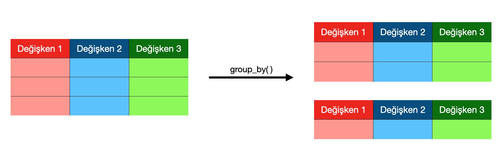
Verisetini group_by() fonksiyonu ile maçları ev sahibi takım ülkelerinin bulundukları kıtalara göre alt kümelere (gruplara) ayıralım.
group_by(worldcup, home_team_continent)# A tibble: 23,921 × 25
# Groups: home_team_continent [6]
date home_team away_…¹ home_…² away_…³ home_…⁴ away_…⁵ home_…⁶ away_…⁷
<date> <chr> <chr> <chr> <chr> <dbl> <dbl> <dbl> <dbl>
1 1993-08-08 Bolivia Uruguay South … South … 59 22 0 0
2 1993-08-08 Brazil Mexico South … North … 8 14 0 0
3 1993-08-08 Ecuador Venezu… South … South … 35 94 0 0
4 1993-08-08 Guinea Sierra… Africa Africa 65 86 0 0
5 1993-08-08 Paraguay Argent… South … South … 67 5 0 0
6 1993-08-08 Peru Colomb… South … South … 70 19 0 0
7 1993-08-08 Zimbabwe Eswati… Africa Africa 50 102 0 0
8 1993-08-09 Guinea Sierra… Africa Africa 65 86 0 0
9 1993-08-11 Faroe Isl… Norway Europe Europe 111 9 0 0
10 1993-08-11 Sweden Switze… Europe Europe 4 3 0 0
# … with 23,911 more rows, 16 more variables: home_team_score <dbl>,
# away_team_score <dbl>, tournament <chr>, city <chr>, country <chr>,
# neutral_location <lgl>, shoot_out <chr>, home_team_result <chr>,
# home_team_goalkeeper_score <dbl>, away_team_goalkeeper_score <dbl>,
# home_team_mean_defense_score <dbl>, home_team_mean_offense_score <dbl>,
# home_team_mean_midfield_score <dbl>, away_team_mean_defense_score <dbl>,
# away_team_mean_offense_score <dbl>, away_team_mean_midfield_score <dbl>, …5.4. summarise() fonksiyonu
Değişkenlerin ortalama, varyans vb. istatistiklerini hesaplayarak, veri setini özetlemek için kullanılır.
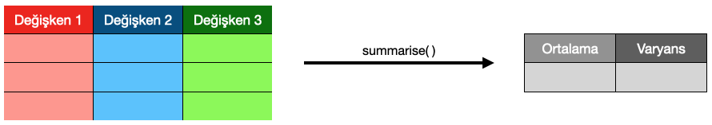
Veriseti üzerinde summary() fonksiyonu ile bir kaç özetleme uygulaması yapalım.
# Ev sahibi takımların gol ortalaması
summarise(worldcup, mean(home_team_score))# A tibble: 1 × 1
`mean(home_team_score)`
<dbl>
1 1.61# Deplasman takımlarının gol ortalaması
summarise(worldcup, mean(away_team_score))# A tibble: 1 × 1
`mean(away_team_score)`
<dbl>
1 1.07Bu işlemleri {dplyr} fonksiyonları kullanmadan da yapabilirdik.
# Ev sahibi takımların gol ortalaması
mean(worldcup$home_team_score)[1] 1.609214# Deplasman takımlarının gol ortalaması
mean(worldcup$away_team_score)[1] 1.068266Bu işlemler sırasında eğer eksik veriler (NA) nedeniyle bir hata alırsanız, fonksiyon içerisinde eksik değerlerin göz ardı edilmesi için na.rm argümanını kullanabilirsiniz.
mean(worldcup$home_team_score, na.rm = TRUE)[1] 1.6092145.5. mutate() fonksiyonu
Veri setinde yer alan sütunları (değişkenleri), aritmetik ve ilişkisel operatörler yardımıyla, yeni değişken(ler) oluşturmak için kullanılır.
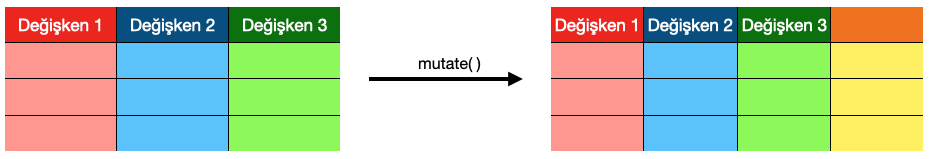
Veriseti üzerinde mutate() fonksiyonu ile ev sahibi takımların ortalama defans skoruna oranla kaç gol yediklerini gösteren yeni bir değişken (sütun) oluşturalım.
worldcup2 <- mutate(worldcup,
defans_skor_oranı = away_team_score / home_team_mean_defense_score)
select(worldcup2, c("home_team", "away_team", "defans_skor_oranı"))# A tibble: 23,921 × 3
home_team away_team defans_skor_oranı
<chr> <chr> <dbl>
1 Bolivia Uruguay NA
2 Brazil Mexico NA
3 Ecuador Venezuela NA
4 Guinea Sierra Leone NA
5 Paraguay Argentina NA
6 Peru Colombia NA
7 Zimbabwe Eswatini NA
8 Guinea Sierra Leone NA
9 Faroe Islands Norway NA
10 Sweden Switzerland NA
# … with 23,911 more rowsfilter(worldcup2, !is.na(defans_skor_oranı))# A tibble: 7,787 × 26
date home_team away_…¹ home_…² away_…³ home_…⁴ away_…⁵ home_…⁶ away_…⁷
<date> <chr> <chr> <chr> <chr> <dbl> <dbl> <dbl> <dbl>
1 2004-09-03 Netherlan… Liecht… Europe Europe 6 152 0 0
2 2004-09-03 Spain Scotla… Europe Europe 3 67 0 0
3 2004-09-04 Austria England Europe Europe 90 7 0 0
4 2004-09-04 Belgium Lithua… Europe Europe 29 118 0 0
5 2004-09-04 Burkina F… Uganda Africa Africa 83 102 0 0
6 2004-09-04 Canada Hondur… North … North … 99 47 0 0
7 2004-09-04 Croatia Hungary Europe Europe 25 76 0 0
8 2004-09-04 Denmark Ukraine Europe Europe 15 87 0 0
9 2004-09-04 Finland Andorra Europe Europe 53 148 0 0
10 2004-09-04 France Israel Europe Europe 2 69 0 0
# … with 7,777 more rows, 17 more variables: home_team_score <dbl>,
# away_team_score <dbl>, tournament <chr>, city <chr>, country <chr>,
# neutral_location <lgl>, shoot_out <chr>, home_team_result <chr>,
# home_team_goalkeeper_score <dbl>, away_team_goalkeeper_score <dbl>,
# home_team_mean_defense_score <dbl>, home_team_mean_offense_score <dbl>,
# home_team_mean_midfield_score <dbl>, away_team_mean_defense_score <dbl>,
# away_team_mean_offense_score <dbl>, away_team_mean_midfield_score <dbl>, …Görüldüğü gibi {dplyr} fonksiyonları bir çok sorguyu ayrı ayrı yapmamıza imkan veriyor ancak bu sorguları birleştirmeden anlamlı bir bilgiye ulaşmak kolay olmayabiliyor. Bunun için {dplyr} operatörlerinden faydalanacağız.
5.6. arrange() fonksiyonu
Veri setinde yer alan gözlemleri (satırları) istenilen bir değişkenin değerlerine göre artan ya da azalan düzende sıralamak için kullanılır.
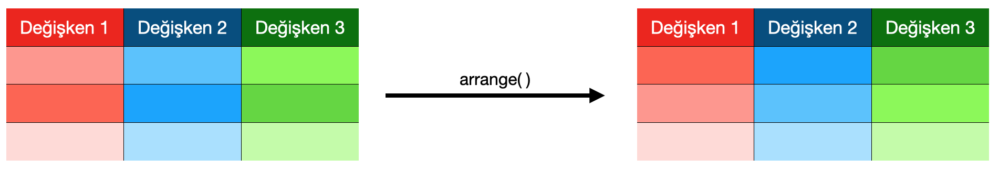
Veriseti üzerinde arrange() fonksiyonu ile bir kaç özetleme uygulaması yapalım.
arrange(worldcup, home_team_fifa_rank)# A tibble: 23,921 × 25
date home_team away_t…¹ home_…² away_…³ home_…⁴ away_…⁵ home_…⁶ away_…⁷
<date> <chr> <chr> <chr> <chr> <dbl> <dbl> <dbl> <dbl>
1 1994-03-23 Germany Italy Europe Europe 1 11 0 0
2 1994-05-04 Brazil Iceland South … Europe 1 43 0 0
3 1994-06-17 Germany Bolivia Europe South … 1 43 0 0
4 1994-06-21 Germany Spain Europe Europe 1 5 0 0
5 1994-06-27 Germany Korea R… Europe Asia 1 37 0 0
6 1994-07-02 Germany Belgium Europe Europe 1 27 0 0
7 1995-02-22 Brazil Slovakia South … Europe 1 44 0 0
8 1995-03-29 Brazil Honduras South … North … 1 53 0 0
9 1995-06-04 Brazil Sweden South … Europe 1 6 0 0
10 1995-06-06 Brazil Japan South … Asia 1 35 0 0
# … with 23,911 more rows, 16 more variables: home_team_score <dbl>,
# away_team_score <dbl>, tournament <chr>, city <chr>, country <chr>,
# neutral_location <lgl>, shoot_out <chr>, home_team_result <chr>,
# home_team_goalkeeper_score <dbl>, away_team_goalkeeper_score <dbl>,
# home_team_mean_defense_score <dbl>, home_team_mean_offense_score <dbl>,
# home_team_mean_midfield_score <dbl>, away_team_mean_defense_score <dbl>,
# away_team_mean_offense_score <dbl>, away_team_mean_midfield_score <dbl>, …Bu fonksiyon istenilen bir değişkenin (sütunun) değerlerine göre tüm gözlem değerlerini (satırları) artan şekilde (en düşük değerden en yüksek değere doğru) sıralar. Tam tersi şekilde sıralamak için desc() fonksiyonu kullanılır.
arrange(worldcup, desc(home_team_fifa_rank))# A tibble: 23,921 × 25
date home_team away_…¹ home_…² away_…³ home_…⁴ away_…⁵ home_…⁶ away_…⁷
<date> <chr> <chr> <chr> <chr> <dbl> <dbl> <dbl> <dbl>
1 2018-11-18 Turks and… St. Vi… North … North … 211 175 855 955
2 2019-03-24 San Marino Scotla… Europe Europe 211 40 854 1446
3 2019-09-06 San Marino Belgium Europe Europe 211 1 839 1746
4 2019-09-09 San Marino Cyprus Europe Europe 211 93 839 1258
5 2022-06-05 San Marino Malta Europe Europe 211 169 776 971
6 2022-06-09 San Marino Iceland Europe Europe 211 63 776 1380
7 2018-10-12 Bahamas Antigu… North … North … 210 127 862 1122
8 2018-10-13 Turks and… Guyana North … South … 210 182 862 937
9 2018-11-18 Bahamas Anguil… North … North … 210 208 858 864
10 2019-03-16 Bahamas Turks … North … North … 210 208 858 864
# … with 23,911 more rows, 16 more variables: home_team_score <dbl>,
# away_team_score <dbl>, tournament <chr>, city <chr>, country <chr>,
# neutral_location <lgl>, shoot_out <chr>, home_team_result <chr>,
# home_team_goalkeeper_score <dbl>, away_team_goalkeeper_score <dbl>,
# home_team_mean_defense_score <dbl>, home_team_mean_offense_score <dbl>,
# home_team_mean_midfield_score <dbl>, away_team_mean_defense_score <dbl>,
# away_team_mean_offense_score <dbl>, away_team_mean_midfield_score <dbl>, …Veriseti maçların oynanma tarihlerine göre geçmişten günümüze doğru sıralanmıştır, bu sıralamayı da tersine çevirebiliriz.
arrange(worldcup, desc(date))# A tibble: 23,921 × 25
date home_team away_…¹ home_…² away_…³ home_…⁴ away_…⁵ home_…⁶ away_…⁷
<date> <chr> <chr> <chr> <chr> <dbl> <dbl> <dbl> <dbl>
1 2022-06-14 Costa Rica New Ze… North … Oceania 31 101 1503 1206
2 2022-06-14 Kuwait Jordan Asia Asia 146 91 1059 1259
3 2022-06-14 Indonesia Nepal Asia Asia 159 168 1001 978
4 2022-06-14 Palestine Philip… Asia Asia 100 133 1208 1117
5 2022-06-14 Mongolia Yemen Asia Asia 186 151 911 1046
6 2022-06-14 Maldives Sri La… Africa Asia 156 205 1025 842
7 2022-06-14 Uzbekistan Thaila… Asia Asia 83 111 1286 1167
8 2022-06-14 Afghanist… Cambod… Asia Asia 150 171 1049 966
9 2022-06-14 India Hong K… Asia Asia 106 147 1174 1053
10 2022-06-14 Bahrain Turkme… Asia Asia 89 134 1262 1117
# … with 23,911 more rows, 16 more variables: home_team_score <dbl>,
# away_team_score <dbl>, tournament <chr>, city <chr>, country <chr>,
# neutral_location <lgl>, shoot_out <chr>, home_team_result <chr>,
# home_team_goalkeeper_score <dbl>, away_team_goalkeeper_score <dbl>,
# home_team_mean_defense_score <dbl>, home_team_mean_offense_score <dbl>,
# home_team_mean_midfield_score <dbl>, away_team_mean_defense_score <dbl>,
# away_team_mean_offense_score <dbl>, away_team_mean_midfield_score <dbl>, …6. Birleştirme fonksiyonları
Data frame, tibble vb. yapıdaki iki veri yapısını bir ya da daha fazla referans değişken yardımıyla birleştirme işlemleridir.
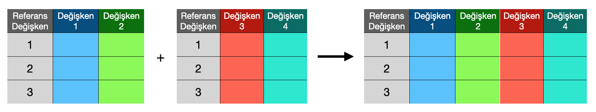
worldcup veriseti üzerinde birleştirme uygulamaları yapabilmek için verisetinden iki ayrı veriseti oluşturalım. Bunun için öncelikle bir referens değişken ekleyelim.
worldcup3 <- mutate(worldcup, id = 1:dim(worldcup)[1])
select(worldcup3, c("id", "date", "home_team", "away_team"))# A tibble: 23,921 × 4
id date home_team away_team
<int> <date> <chr> <chr>
1 1 1993-08-08 Bolivia Uruguay
2 2 1993-08-08 Brazil Mexico
3 3 1993-08-08 Ecuador Venezuela
4 4 1993-08-08 Guinea Sierra Leone
5 5 1993-08-08 Paraguay Argentina
6 6 1993-08-08 Peru Colombia
7 7 1993-08-08 Zimbabwe Eswatini
8 8 1993-08-09 Guinea Sierra Leone
9 9 1993-08-11 Faroe Islands Norway
10 10 1993-08-11 Sweden Switzerland
# … with 23,911 more rowsGörüldüğü gibi artık id isimli bir referans değişkenine sahip worldcup3 isminde yeni bir veriseti oluşturduk. Bunu iki ayrı alt kümeye bölelim.
# worldcup3 verisetinde yer alan 20001-20005 satırlarındaki gözlem değerlerinin
# id, date, home_team, away_team değişkenlerinden oluşan bir veriseti oluşturalım.
wc1 <- select(worldcup3[20001:20005, ], c("id", "date","home_team", "away_team"))
# worldcup3 verisetinde yer alan 20003-20007 satırlarındaki gözlem değerlerinin
# id, home_team_score, away_team_score değişkenlerinden oluşan bir veriseti oluşturalım.
wc2 <- select(worldcup3[20003:20007, ], c("id", "home_team_score", "away_team_score"))
wc1# A tibble: 5 × 4
id date home_team away_team
<int> <date> <chr> <chr>
1 20001 2017-11-14 Slovakia Norway
2 20002 2017-11-14 Tajikistan Yemen
3 20003 2017-11-14 Trinidad and Tobago Guyana
4 20004 2017-11-14 Turkmenistan Chinese Taipei
5 20005 2017-11-14 United Arab Emirates Uzbekistan wc2# A tibble: 5 × 3
id home_team_score away_team_score
<int> <dbl> <dbl>
1 20003 1 1
2 20004 2 1
3 20005 1 0
4 20006 0 0
5 20007 1 1Oluşan iki yeni verisetinde bazı gözlem değerlerinin aynı olduklarını id değişkeni üzerinden görebiliriz. İzleyen bölümlerde birleştirme uygulamalarını gerçekleştirebiliriz.
6.1. inner_join() fonksiyonu
İki data frame’de ortak olarak yer alan gözlem değerleri korunur. Başka bir deyişle, bir gözlem değeri data frame’lerden her ikisinde de yer alması durumunda birleştirilmiş data frame’e eklenir.
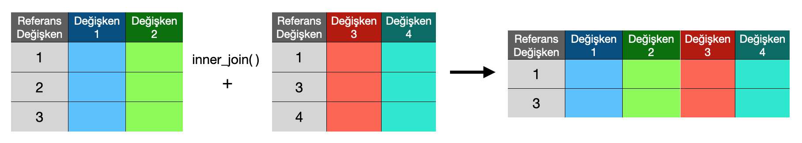
wc1 ve wc2 verisetlerini id değişkenini referans olarak kullanıp, inner_join() fonksiyonu ile birleştirelim.
inner_join(wc1, wc2, by = "id")# A tibble: 3 × 6
id date home_team away_team home_team_score away_te…¹
<int> <date> <chr> <chr> <dbl> <dbl>
1 20003 2017-11-14 Trinidad and Tobago Guyana 1 1
2 20004 2017-11-14 Turkmenistan Chinese Taipei 2 1
3 20005 2017-11-14 United Arab Emirates Uzbekistan 1 0
# … with abbreviated variable name ¹away_team_scoreYukarıdaki kodu by argümanı kullanmadan da çalıştırabilirdik. R, referans değişkeni otomatik olarak bulabilir. Ancak birden fazla referans değişken olmaya aday değişken içeren verisetleri üzerinden çalışırken bu özellik hata yapmamıza, neden olabilir. Bu nedenle by argümanını kullanmak önemlidir.
6.2. full_join() fonksiyonu
İki data frame’de yer alan tüm gözlem değerleri eşleşmeler önemli olmaksızın korunur. Başka bir deyişle, bir gözlem değeri data frame’lerden yalnızca birinde yer alsa bile birleştirilmiş data frame’e eklenir.
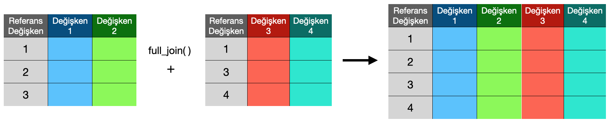
wc1 ve wc2 verisetlerini id değişkenini referans olarak kullanıp, full_join() fonksiyonu ile birleştirelim.
full_join(wc1, wc2, by = "id")# A tibble: 7 × 6
id date home_team away_team home_team_score away_te…¹
<int> <date> <chr> <chr> <dbl> <dbl>
1 20001 2017-11-14 Slovakia Norway NA NA
2 20002 2017-11-14 Tajikistan Yemen NA NA
3 20003 2017-11-14 Trinidad and Tobago Guyana 1 1
4 20004 2017-11-14 Turkmenistan Chinese Taipei 2 1
5 20005 2017-11-14 United Arab Emirates Uzbekistan 1 0
6 20006 NA <NA> <NA> 0 0
7 20007 NA <NA> <NA> 1 1
# … with abbreviated variable name ¹away_team_scoreBurada gerçekleşen birleştirme işlemi sonrasında her iki verisetinde yer almayan değerlerin eksik değerler (NA) olarak birleştirildiğine dikkat ediniz.
6.3. left_join() fonksiyonu
Solda yer alan data frame’deki tüm gözlem değerleri, sağda yer alan data frame’de eşleşmeleri olmasa bile korunur. Eşleşmeyen gözlem değerlerinin aldığı değerler, birleştirilmiş data frame’de eksik gözlem (NA: non-available) olarak görülür.
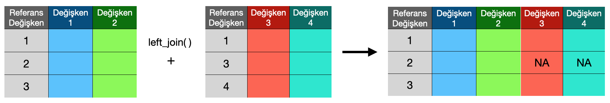
wc1 ve wc2 verisetlerini id değişkenini referans olarak kullanıp, left_join() fonksiyonu ile birleştirelim.
left_join(wc1, wc2, by = "id")# A tibble: 5 × 6
id date home_team away_team home_team_score away_te…¹
<int> <date> <chr> <chr> <dbl> <dbl>
1 20001 2017-11-14 Slovakia Norway NA NA
2 20002 2017-11-14 Tajikistan Yemen NA NA
3 20003 2017-11-14 Trinidad and Tobago Guyana 1 1
4 20004 2017-11-14 Turkmenistan Chinese Taipei 2 1
5 20005 2017-11-14 United Arab Emirates Uzbekistan 1 0
# … with abbreviated variable name ¹away_team_scorefull_join() birleştirme işlemine benzer şekilde burada da her iki verisetinde yer almayan değerlerin eksik değerler (NA) olarak birleştirildiğine dikkat ediniz.
6.4. right_join() fonksiyonu
Sağda yer alan data frame’deki tüm gözlem değerleri, solda yer alan data frame’de eşleşmeleri olmasa bile korunur. Eşleşmeyen gözlem değerlerinin aldığı değerler, birleştirilmiş data frame’de eksik gözlem (NA: non-available) olarak görülür.
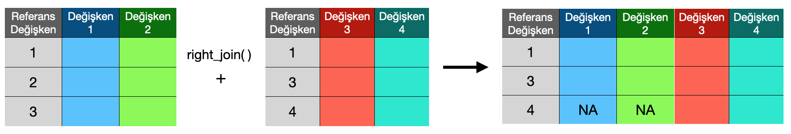
wc1 ve wc2 verisetlerini id değişkenini referans olarak kullanıp, right_join()` fonksiyonu ile birleştirelim.
right_join(wc1, wc2, by = "id")# A tibble: 5 × 6
id date home_team away_team home_team_score away_te…¹
<int> <date> <chr> <chr> <dbl> <dbl>
1 20003 2017-11-14 Trinidad and Tobago Guyana 1 1
2 20004 2017-11-14 Turkmenistan Chinese Taipei 2 1
3 20005 2017-11-14 United Arab Emirates Uzbekistan 1 0
4 20006 NA <NA> <NA> 0 0
5 20007 NA <NA> <NA> 1 1
# … with abbreviated variable name ¹away_team_scorefull_join() birleştirme işlemine benzer şekilde burada da her iki verisetinde yer almayan değerlerin eksik değerler (NA) olarak birleştirildiğine dikkat ediniz.
7. {dplyr} operatörleri
7.1. Pipe (%>%) operatörü
Pipe (Payp) operatörü temel olarak, x %>% f(x) şeklinde soldaki veriseti üzerinde sağdaki fonksiyonda yer alan işlemi yapmak için kullanılır.
data <- c(3, 6, 9, 11, 4, 6)
data %>% mean[1] 6.5Temel işlevinin yanı sıra, uygulamada sıklıkla {dplyr} tipi fonksiyonları birbirine bağlamak için kullanılır.
Örneğin, worldcup verisetini kullanarak, 2000-2010 yılları arasına ev sahibi ve deplasman takımlarının ortalama gol sayılarını hesaplayalım. Bu işlem birkaç adımdan oluşur ve birden fazla {dplyr} fonksiyonu kullanılmasını gerektirir.
worldcup %>%
filter(date < "2010-12-31" & date > "2000-01-01") %>%
summarise(evSahibiTakımOrtalamaGol = mean(home_team_score),
DeplasmanTakımıOrtalamaGol = mean(away_team_score))# A tibble: 1 × 2
evSahibiTakımOrtalamaGol DeplasmanTakımıOrtalamaGol
<dbl> <dbl>
1 1.64 1.08Burada öncelikle ilgili tarihler arasında oynanan maçların filtrelendiğini ve sonrasında istenilen istatistiklerin hesaplanabildiğini unutmayınız.
Aynı uygulamayı, Türk Milli Takımı özelinde yapalım. Bu uygulamayı gerçekleştirebilmek için Türk Milli Takımı’nın oynadığı maçları belirlemek (filtrelemek) gerekiyor. Bunu ayrı bir filter() fonksiyonu kullanarak yapabiliriz. Ancak hem ev sahibi hem de deplasman takımı olarak maç oynayabileceğini unutmamak gerekir.
worldcup %>%
filter(home_team == "Turkey" | away_team == "Turkey") %>%
filter(date < "2010-12-31" & date > "2000-01-01") %>%
summarise(evSahibiTakımOrtalamaGol = mean(home_team_score),
DeplasmanTakımıOrtalamaGol = mean(away_team_score))# A tibble: 1 × 2
evSahibiTakımOrtalamaGol DeplasmanTakımıOrtalamaGol
<dbl> <dbl>
1 1.38 1.20Türk ve Portekiz Milli Takımları özelinde 2010 yılı sonrasında ev sahibi olarak oynadıkları maçlarda hücum gücüne oranla buldukları gol oranını hesaplamak isteyelim.
worldcup %>%
filter(date > "2010-01-01") %>%
filter(home_team %in% c("Turkey", "Portugal")) %>%
mutate(hücumGolOranı = home_team_score / home_team_mean_offense_score) # A tibble: 162 × 26
date home_team away_t…¹ home_…² away_…³ home_…⁴ away_…⁵ home_…⁶ away_…⁷
<date> <chr> <chr> <chr> <chr> <dbl> <dbl> <dbl> <dbl>
1 2010-03-03 Portugal China PR Europe Asia 6 83 0 0
2 2010-03-03 Turkey Honduras Europe North … 41 35 0 0
3 2010-05-22 Turkey Czech R… Europe Europe 33 29 0 0
4 2010-05-24 Portugal Cabo Ve… Europe Africa 3 117 0 0
5 2010-06-01 Portugal Cameroon Europe Africa 3 19 0 0
6 2010-06-21 Portugal Korea D… Europe Asia 3 105 0 0
7 2010-06-25 Portugal Brazil Europe South … 3 1 0 0
8 2010-08-11 Turkey Romania Europe Europe 28 42 0 0
9 2010-09-03 Portugal Cyprus Europe Europe 8 63 0 0
10 2010-09-07 Turkey Belgium Europe Europe 28 48 0 0
# … with 152 more rows, 17 more variables: home_team_score <dbl>,
# away_team_score <dbl>, tournament <chr>, city <chr>, country <chr>,
# neutral_location <lgl>, shoot_out <chr>, home_team_result <chr>,
# home_team_goalkeeper_score <dbl>, away_team_goalkeeper_score <dbl>,
# home_team_mean_defense_score <dbl>, home_team_mean_offense_score <dbl>,
# home_team_mean_midfield_score <dbl>, away_team_mean_defense_score <dbl>,
# away_team_mean_offense_score <dbl>, away_team_mean_midfield_score <dbl>, …Çıktıda yalnızca ilgilendiğimiz, date, home_team, away_team, ve hücumGolOranı değişkenlerini görmek istersek, select() fonksiyonunu kulllanabiliriz.
worldcup %>%
filter(date > "2010-01-01") %>%
filter(home_team %in% c("Turkey", "Portugal")) %>%
mutate(hücumGolOranı = home_team_score / home_team_mean_offense_score) %>%
select(date, home_team, away_team, hücumGolOranı)# A tibble: 162 × 4
date home_team away_team hücumGolOranı
<date> <chr> <chr> <dbl>
1 2010-03-03 Portugal China PR 0.0237
2 2010-03-03 Turkey Honduras 0.0257
3 2010-05-22 Turkey Czech Republic 0.0257
4 2010-05-24 Portugal Cabo Verde 0
5 2010-06-01 Portugal Cameroon 0.0356
6 2010-06-21 Portugal Korea DPR 0.0830
7 2010-06-25 Portugal Brazil 0
8 2010-08-11 Turkey Romania 0.0257
9 2010-09-03 Portugal Cyprus 0.0471
10 2010-09-07 Turkey Belgium 0.0390
# … with 152 more rowsEğer iki takımın yeni oluşturduğumuz değişken (hücumGolOranı) özelinde ortalamala ve varyanslarını hesaplamak istersek, summarise() fonksiyonunu da zincire ekleyebiliriz. Burada iki farklı takım için bu hesabı yapacağımız için öncelikle group_by() fonksiyonu ile gözlem değerlerini iki gruba ayırmamız gerektiğini unutmayınız.
worldcup %>%
filter(date > "2010-01-01") %>%
filter(home_team %in% c("Turkey", "Portugal")) %>%
mutate(hücumGolOranı = home_team_score / home_team_mean_offense_score) %>%
group_by(home_team) %>%
summarise(ortalama = mean(hücumGolOranı),
varyans = var(hücumGolOranı))# A tibble: 2 × 3
home_team ortalama varyans
<chr> <dbl> <dbl>
1 Portugal 0.0260 0.000459
2 Turkey 0.0211 0.000310Eğer RStudio kullanıyorsanız, Ctrl + Shift + M kısayolu, MAC işletim sistemi kullanıyorsanız Cmd + Shift + M kısayolu ile pipe operatörünü yazabilirsiniz.
7.2. Yeni pipe (|>) operatörü
Pipe (%>%) operatörü ile gerçekleştirdiğimiz tüm işlemleri, yeni pipe (|>) operatörü ile de yapabiliriz. İkisi arasındaki fark, önceki derste değindiğimiz data.frame ve tibble veri yapılarının arasındaki farklara benzer yazılımsal iyileştirmelerdir. Bu farklara ilişkin detaylı bilgilere buradan göz atabilirsiniz.
worldcup |>
filter(date > "2010-01-01") |>
filter(home_team %in% c("Turkey", "Portugal")) |>
mutate(hücumGolOranı = home_team_score / home_team_mean_offense_score) |>
group_by(home_team) |>
summarise(ortalama = mean(hücumGolOranı),
varyans = var(hücumGolOranı))# A tibble: 2 × 3
home_team ortalama varyans
<chr> <dbl> <dbl>
1 Portugal 0.0260 0.000459
2 Turkey 0.0211 0.0003108. Pivot fonksiyonları
Pivot fonksiyonları ileri veri işleme adımları için oldukça kullanışlıdırlar. {dplyr} paketi ile birlikte aynı meta-paket içerisinde yer alan {tidyr} paketinde yer almaktadırlar.
Bu fonksiyonları kullanabilmek için öncelikle {tidyr} paketinin yüklenmesi ve çalışma ortamına çağrılması gerekmektedir.
install.packages("tidyr")
library(tidyr)8.1. pivot_longer() fonksiyonu
pivot_longer() fonksiyonu, satır sayısını artırarak ve sütun sayısını azaltarak verisetini uzatır.
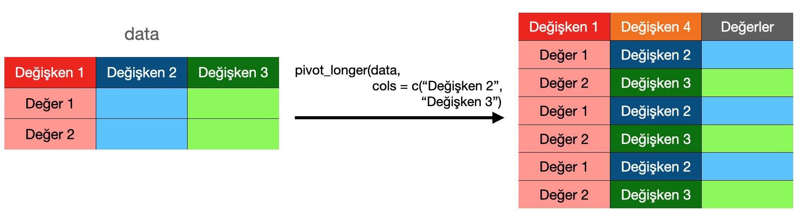
worldcup veriseti üzerinde özet bir tablo oluşturup, pivot_longer() fonksiyonunu kullanarak tabloyu uzatalım.
ozet_tablo <- worldcup %>%
filter(date > "2010-01-01") %>%
filter(home_team %in% c("Turkey", "Portugal", "Wales", "England", "Poland")) %>%
mutate(hücumGolOranı = home_team_score / home_team_mean_offense_score) %>%
group_by(home_team) %>%
summarise(ortalama = mean(hücumGolOranı),
varyans = var(hücumGolOranı))
pivot_longer(ozet_tablo, cols = c("ortalama", "varyans"))# A tibble: 10 × 3
home_team name value
<chr> <chr> <dbl>
1 England ortalama 0.0236
2 England varyans 0.000327
3 Poland ortalama 0.0216
4 Poland varyans 0.000353
5 Portugal ortalama 0.0260
6 Portugal varyans 0.000459
7 Turkey ortalama 0.0211
8 Turkey varyans 0.000310
9 Wales ortalama 0.0177
10 Wales varyans 0.000279Burada oluşan uzatılmış tabloda ortalama ve varyans değişkenleri (sütunları), name adı altında yeni bir değişkenin değerlerine dönüşmüş ve karşılık gelen değerler ise value isminde bir değişken içerisinde yer almıştır. Bu işleme, veri görselleştirme, modelleme ve analiz işlemlerinde sıklıkla ihtiyaç duyulmaktadır.
8.2. pivot_wider() fonksiyonu
pivot_wider() fonskiyonu ise sütun sayısını artırarak ve satır sayısını azaltarak verisetini genişletir.
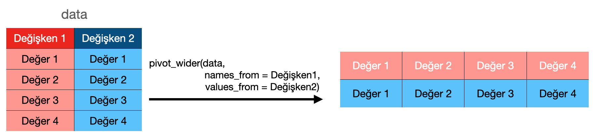
worldcup veriseti üzerinde özet bir tablo oluşturup, pivot_wider() fonksiyonunu kullanarak tabloyu genişletelim.
ozet_tablo <- worldcup %>%
filter(date > "2010-01-01") %>%
filter(home_team %in% c("Turkey", "Portugal", "Wales", "England", "Poland")) %>%
mutate(hücumGolOranı = home_team_score / home_team_mean_offense_score) %>%
group_by(home_team) %>%
summarise(ortalama = mean(hücumGolOranı))
pivot_wider(ozet_tablo,
names_from = home_team,
values_from = ortalama)# A tibble: 1 × 5
England Poland Portugal Turkey Wales
<dbl> <dbl> <dbl> <dbl> <dbl>
1 0.0236 0.0216 0.0260 0.0211 0.0177Burada oluşan genişletilmiş tabloda home_team değişkeninde yer alan gözlem değerlerinin her biri ayrı değişkene (sütuna) dönüşmüş ve karşılık gelen ortalama değişkeni değerleri de bu değişkenlerin gözlem değeri olmuşlardır. Burada oluşan sütun sayısı names_from argümanına eşitlenen değişkenin düzey (tekil gözlem) sayısına bağlıdır.
İletişim
Mustafa Çavuş, Eskişehir Teknik Üniversitesi, İstatistik Bölümü
E-posta: mustafacavus@eskisehir.edu.tr
LinkedIn: https://www.linkedin.com/in/mustafacavusphd/
Twitter: https://twitter.com/mustafa__cavus